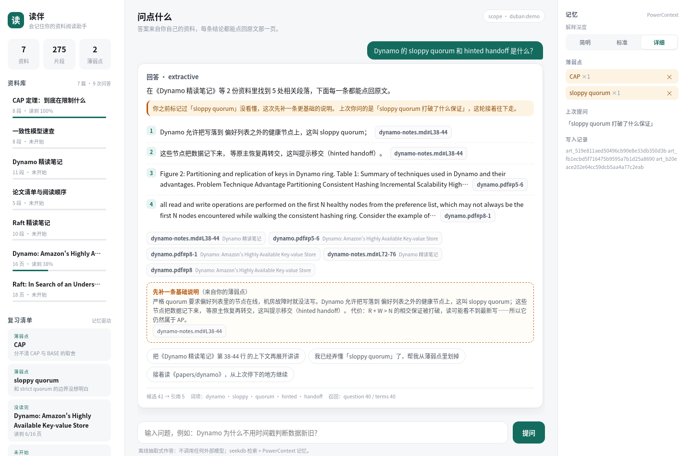
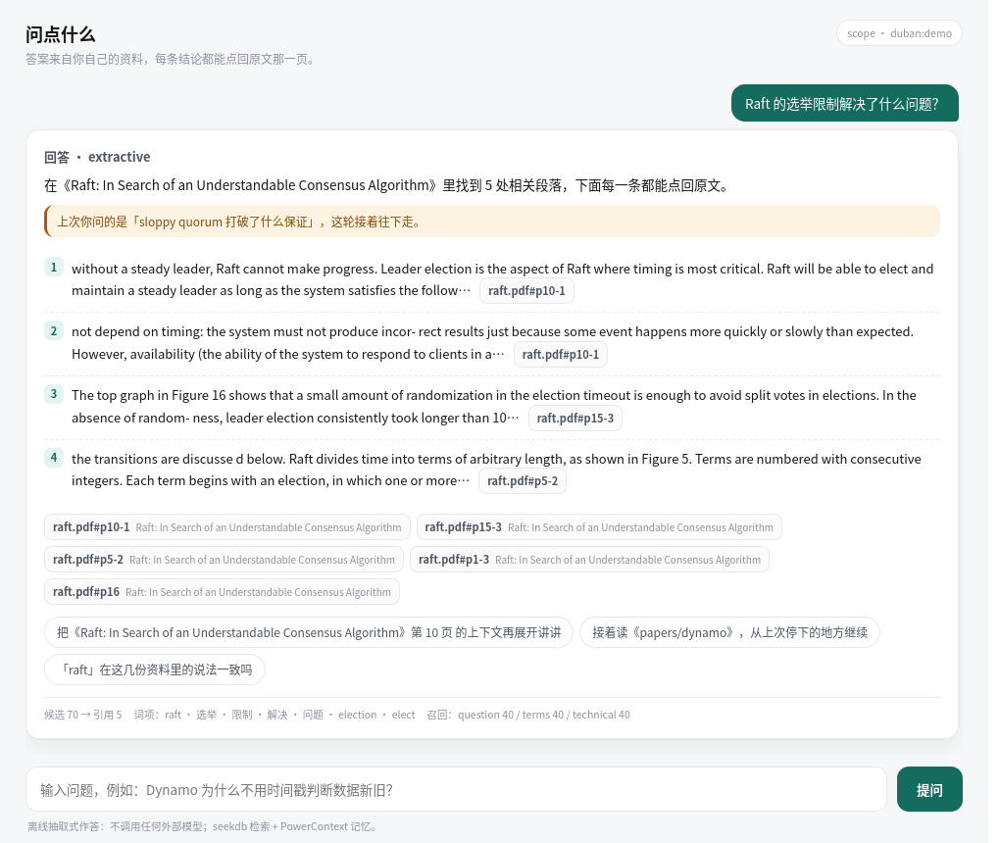
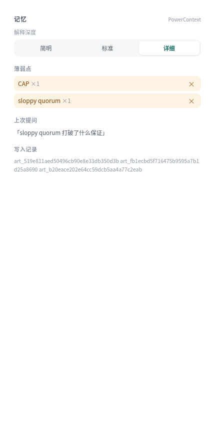
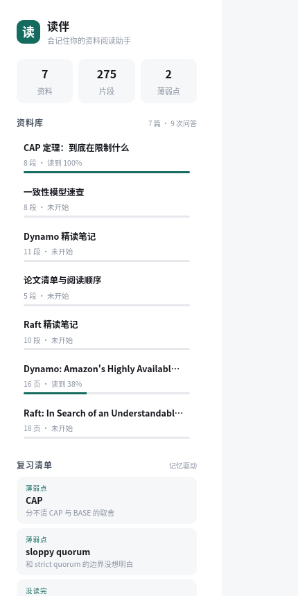

⌕
找一句话，翻十分钟
「这个结论在哪篇论文第几页？」PDF 里 Ctrl+F 猜关键词，中文问题还搜不到英文原文。
OceanBase 2026 · Qoder 赛题
读伴把「论文、笔记、交接文档」放进同一个索引里：用中文提问也能命中英文论文， 每条结论都挂着一个能点开的页码；你没看懂的概念、读到第几页，它都记得。

它们不值得单独写脚本，但每次都要花掉十几分钟。
「这个结论在哪篇论文第几页？」PDF 里 Ctrl+F 猜关键词，中文问题还搜不到英文原文。
上周卡住的概念，这周重新读一遍——因为没有工具记得你卡在哪。
隔几天再打开，忘了读到第几页、为什么停下，只好从头扫一遍。
seekdb 里的 NGRAM 全文索引同时收中文笔记和英文论文；
内置一张人工术语表做跨语言查询扩展，把「选举限制」扩成
election restriction 再去取候选。
重排用了 IDF 覆盖度、标题命中、邻近度，并对目录页与自测问句降权。

薄弱点写进 PowerContext 的 atomic-memory。下次问到相关内容，
它会先取一条更基础的片段，并在回答上方说明「你之前标记过这个」。
画像是「解释深度」，进度是「读到第几页」，都是只追加、可重启。

没弄懂的概念、没读完的资料、还没开始的那几篇，按剩余比例排好， 每条都能一键「去问」或「接着读」。
数据全部来自记忆与索引，不额外维护一份清单。

两套技术分工明确：seekdb 管「资料里说过什么」，PowerContext 管「你到哪儿了」。
21 道人工标注题，每题写清「正确答案在哪一篇的哪一页 / 哪一节」。
指标由 python -m duban eval 生成，改动标注不会被代码反向影响。
| 指标 | 值 | 含义 |
|---|---|---|
| Hit@3 | 0.9048 | 19/21 题的正确证据落在前三条引用 |
| MRR | 0.7540 | 首条正确结果的平均倒数排名 |
| must_include | 0.8571 | 回答覆盖人工标注关键词的比例 |
| citation_valid | 1.0000 | 返回的引用 100% 能回查到原文 |
| 语料 | 7 篇 / 275 片段 | 2 篇英文论文 + 5 篇中文笔记 |
| 测试 | 9 passed | 切块、引用回查、记忆重启、增量导入 |
运行环境：Linux x86_64 · Python 3.12.16 · seekdb-v1.4.0.0（嵌入式）。
不需要 OceanBase 实例，不需要模型 Key，不需要联网（除了装依赖）。
# Python 3.12+
python -m venv .venv && . .venv/bin/activate
pip install -r requirements.txt
python -m duban init # 7 篇 / 275 片段入库
python -m duban ask "Raft 的 Figure 8 说明了什么问题？"
python -m duban serve # http://127.0.0.1:8765
完整步骤见仓库 docs/运行说明.md，三组可执行样例见 docs/验证样例.md。
WITH PARSER NGRAM 全文索引MATCH … AGAINST 打分，支持按文档过滤records/db/queries.jsonlatomic-memory：画像、薄弱点、进度、问答摘要seq；重启后仍可读